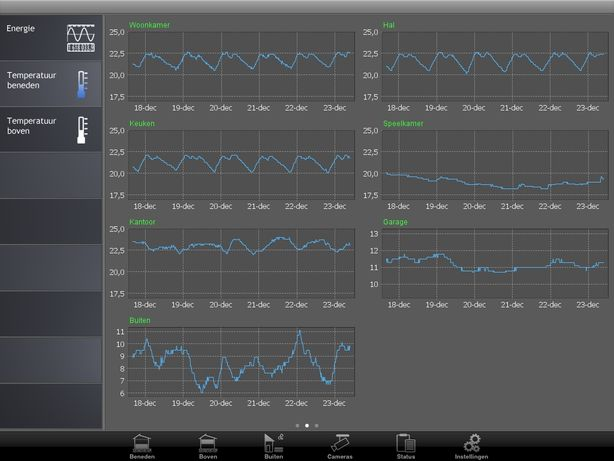

|
This page last changed on Dec 17, 2013 by bass.
Hi guys,
I know there are some hooks to set up logging to RRD4J and EmonCMS, but i'd like to log all raw sensor states directly into a local database both for historical and (more flexible and future) graphing purposes.
Is there a way to "handle" (rule?) a sensor state on every change and have it written to a database?
I've been looking at the source code and it looks like I could use an EventProcessor for this purpose, but if possible i'd like to avoid hard-coding it in the source and use something flexible such as the rules system.
Thoughts are welcome, thanks!
|
Great! I ended up adding a database driver to the web app and simply use that from within the rules, works great!
I now have to add a rule for every sensor, so a more native solution in which you can have a sensor logged from within the designer would be awesome.. (yes yes, I know, open source, do it myself  ) But again, this works just fine. ) But again, this works just fine.
OpenRemote is the best, its elegant and its not only open as in source, the whole setup is very open (as in flexible) too!
Thanks!

Posted by bass at Dec 17, 2013 22:17
|
|
A single rule for all sensors is enough.
Posted by aktur at Dec 18, 2013 00:31
|
|
How would I do that Michal?
What I currently have is: $Sensor:CustomState(source == "Temperature1");
To make this sensor independent I would leave out the name or something?
Oh.. and how would I discriminate the type of sensor that way?
(on second thought.. you might be hinting at using a timer and handle them all from there?)
Thanks
Posted by bass at Dec 18, 2013 00:43
|
|
Simply use:
when
$Sensor: Event($s: source, $v:value)
then
end
$v is an Object() here so you can discriminate the type in an usual Java way.
Posted by aktur at Dec 18, 2013 09:13
|
|
Thanks Michal, using that I was able to keep things much more compact and easier to edit.
Posted by bass at Dec 18, 2013 23:55
|
Thanks Michal, using that I was able to keep things much more compact and easier to edit.
It would be nice if you can share your solution here. There are many users who would like to add data logging in generic way.
Posted by aktur at Dec 19, 2013 08:15
|
|
I certainly will Michal, it's the least I can do.
I'd like to post the full solution in a somewhat orderly manner however, so give me a bit to make it all tie in together and i'll post the snipets that make up the whole.
Much appreciated!
Posted by bass at Dec 19, 2013 18:49
|
|
Bas, I would like to see your method too. Thanks.
Posted by sattva at Dec 20, 2013 09:55
|
|
Hi Alexey, i'm not sure if you're interested in the overal database stuff or more in the semi-agnostic sensor logging..
The latter I ended up doing as Michal suggested, but partially based on a naming convention still, like so:
function void logSensor(String name, String value)
{
execInsert("INSERT INTO " + name + " (temp) VALUES (" + value + ")");
}
rule "log temperature values"
when
$Sensor: Event($s: source, $v:value)
then
String name = $s.toString();
if (name.startsWith("ts_"))
{
logSensor(name, $v.toString());
}
end
As you can see I check for ts_ to see if its a temperature sensor as i'm currently only interested in logging those.. but you could obviously make it even more agnostic by just removing that check. Depending on how you handle the actual database insert that of course means there needs to be a table or columns in accordance with the naming of the actual OpenRemote sensors as well.
Hope this helps.
Bas
Posted by bass at Dec 20, 2013 20:54
|
i'm not sure if you're interested in the overal database stuff or more in the semi-agnostic sensor logging..
Thank you Bas. We have very little documentation so your database logging example helps a lot.
Friendly speaking Java is difficult for me like hell, like trying to biuld 3-store building with nacked hands.
So I'am trying to understand how to work with switches - nothing is clear for now because I can't read the statre of the switch.
As soon as I will finish with switches I will move to data logging: counters of water, gas, and temperature.
In this case your method to insert data into dataBase is a great help!
Only problem is data base connect/disconnect and selection.
I know how to do it in PHP with MySQL, but never did it with Java.
So could you please add this part of the code too?
Alex
Posted by sattva at Dec 20, 2013 21:25
|
|
Sure, it followed sort of the same lines that other ODBC and similar database registrations typically use.
Small disclaimer:
Mind you that i've never used tomcat before and i've noticed you can typically register/define/override the same settings in multiple different files.
This is a pretty neat hierarchical system, but also means I could've chosen to register or copy something where it might not typically be registered or copied to.
I don't think this is the case though, but anyways.. most importantly it works
Now for getting the database stuff going:
First you get yourself a JDBC driver, i'm using Postgres, so that'd be "postgresql-9.3-1100.jdbc4.jar".
This driver/file you simply copy into the "webapps/controller/WEB-INF/lib" folder of your controller installation.
Next you need to register a datasource for your driver:
To do so, create a "context.xml" in the "webapps/controller/META-INF" folder and insert the following:
<Context>
<Resource name="jdbc/database_registration_name_here" auth="Container" type="javax.sql.DataSource"
maxActive="10" maxIdle="5" maxWait="-1"
username="username" password="iwonttellyou" driverClassName="org.postgresql.Driver"
url="jdbc:postgresql:/>
</Context>
The registration and parameters above are pretty similar for most RDBMs I guess, but you'll have to refer to the driver's documentation for the actual connection string and parameters.. rather straightforward however.
And that's it regarding the registration really!
You can now use java code to connect and read/write to this database directly from within the rules file like so:
package org.openremote.controller.model.event
global org.openremote.controller.statuscache.CommandFacade execute;
global org.openremote.controller.statuscache.SwitchFacade switches;
import javax.naming.*;
import javax.sql.*;
import java.sql.*;
function void execInsert(String sql)
{
InitialContext cxt = new InitialContext();
DataSource ds = (DataSource) cxt.lookup( "java:/comp/env/jdbc/database_registration_name_here");
Connection conn = ds.getConnection();
Statement stmt = conn.createStatement();
try {
stmt.executeUpdate(sql);
} catch(SQLException se) {
}
stmt.close();
stmt = null;
conn.close();
conn = null;
}
function void logTempSensor(String name, String value)
{
execInsert("INSERT INTO " + name + " (temp) VALUES (" + value + ")");
}
rule "log temperature values"
when
$Sensor: Event($s: source, $v:value)
then
String name = $s.toString();
if (name.startsWith("ts_"))
{
logTempSensor(name, $v.toString());
}
end
That's it.
Like you (I think?) i'll also be hooking up several additional sensors and readout hardware to monitor the electricity, gas and water usage.. i'll be using a teensy 3.1 and a wifly for this. I'm using JFreeChart for visualization.
Hope this helps!
Bas
(I should add that I agree with you that even though OpenRemote is a pretty nifty platform, its learning curve is quite steep for something that is basically perfectly easy to use. In my opinion this is mostly due to the fact that the people who wrote the docs/help (big thank you however!) already had too much former knowledge about the thing they try to explain and they forget to explain the little things which end up being the things that make you wonder why it is not working for you.. Also, it typically just starts going through the steps, but leaves out what the actual goal is to begin with. Might seem silly.. but i've read quite a few documents where I was left thinking whether or not I just read something which I was looking for or something that was close, but not what I was looking for heh Obviously since it's open, not a complaint, just adding my 2 cents here) (note2: of course writing documentation is just plain boring if you already did the development as well)
Posted by bass at Dec 20, 2013 22:12
|
|
Thank you endeed. A lot of really valuable info in your post.
Now it make sense how to connect database.
Interesting info about "teensy 3.1 and a wifly".
Never heared about these utils/tools.
Will read about it soon. It must be some counting solution.
Posted by sattva at Dec 20, 2013 22:22
|
|
Here's a screenshot of the IPad displaying the sensor graphs/charts:

Posted by bass at Dec 23, 2013 21:01
|
|
Super! It is really-really cool!
Bas, hope these charts are cross-platform (same at Andriod)?
Posted by sattva at Dec 24, 2013 02:25
|
|
{kind=link}